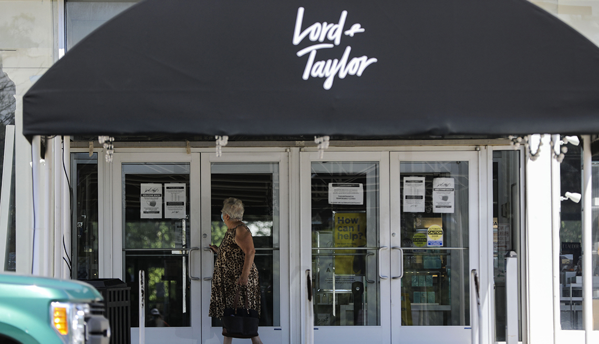

14 Iconic Retailers That Fell Into Pandemic Bankruptcy
En español | COVID-19 did not create the so-called retail apocalypse.More than 9,300 U.S. stores closed in 2019, and over 5,800 did the year before that, according to tracking by Coresight Research.A timeline by business analytics firm CB Insights dates the apocalypse to at least 2015.
But the pandemic has been its most swiftly destructive horseman.Following years that saw major retailers swapping hands in debt-bingeing buyouts while consumers shifted from shopping malls to shopping online, the mass shutdown of 2020 pushed some of America’s most iconic brands to the brink.
The pandemic brought a parade of headline-making Chapter 11 filings, with historic department stores and apparel purveyors at the front.And while bankruptcy doesn’t necessarily mean out of business, the financial fallout from COVID-19 did kill a few storied chains, shrink others and usher several into a new, online-only form.Here are some of the biggest-name bankruptcies to date and what their reorganizations wrought.
Ascena Retail (Lane Bryant, Ann Taylor)
Founded: 1962 (as DressBarn)
Filed for bankruptcy: July 23, 2020
Facing some $1 billion in debt, the company behind some of the best-known names in women’s fashion sold all its brands and shed most of its approximately 2,800 stores as part of a Chapter 11 restructuring that won court approval in March.
Ascena’s biggest names — plus-size bellwether Lane Bryant and premium brands Ann Taylor, Loft and Lou Grey — were sold in December to an affiliate of private equity firm Sycamore Partners, which owns Belk (see below) and several other well-known chains.Two other Ascena brands — tween fashion chain Justice and plus-size line Catherines — were sold earlier in 2020 and closed all their stores (Catherines continues to operate online).
The original bankruptcy filing came about seven months after Ascena liquidated the last stores in its original line, DressBarn, which now operates online only under new ownership.
Founded: 1888
Filed for bankruptcy: Feb.23, 2021
The venerable department store that brands itself the home of 'Modern.Southern.Style.'spent only a day in Chapter 11, emerging from bankruptcy Feb.24 with court approval of a reorganization plan that provides $225 million in new capital and eliminates $450 million in debt.
Belk’s chief financial officer said in a court declaration that the company faced liquidation without fast action on the restructuring blueprint worked out between its majority owner, Sycamore Partners, and key lenders.The deal kept open all 291 Belk stores in 16 Southern and Southeastern states, with no job losses.
Founded by brothers William Henry and John Belk in Monroe, North Carolina, Belk grew into the nation’s largest privately owned department store chain and stayed in the family until Sycamore’s 2015 leveraged buyout, which left the company heavily indebted.The pandemic further walloped Belk’s finances, prompting restructuring talks to start in late 2020, according to court papers.
Founded: 1818
Filed for bankruptcy: July 8, 2020
The brand that for generations defined the American way of dressing for success — especially the American male executive way — faced strong headwinds as people increasingly dressed down for the office and then, with the pandemic, stopped going entirely.When it entered Chapter 11, the country’s oldest ready-to-wear clothing retailer had already opted not to reopen 20 percent of its roughly 250 U.S. stores that went dormant in March, and it’s expected to close its three U.S. factories.
In a post on its Facebook page, Brooks Brothers said bankruptcy proceedings would help it facilitate an ongoing sale process while managing 'what has been an incredibly challenging period for all industries, especially retail.'A joint venture of mall developer Simon Property Group and Authentic Brands Group, a brand-management firm, won court approval Aug.17 to buy Brooks Brothers for $325 million.The new owners pledged to keep at least 125 Brooks Brothers stores open.
The joint venture, called the Sparc Group, has also purchased bankrupt jeans retailer Lucky Brand.
Founded: 1977
Filed for bankruptcy: June 25, 2020
The 600-plus restaurant chain — whose pizza, arcade games and (until it was retired in 2019) animatronic band fueled countless raucous kids’ parties — was especially hard-hit by a pandemic that halted dining out and large gatherings virtually overnight.The company saw revenue plummet by 90 percent, increasing pressure to deal with nearly $1 billion in long-term debt.
CEC, which also owns the similarly themed Peter Piper Pizza chain, completed its restructuring at the end of 2020 with new ownership and about $705 million less in debt.The company and its franchisees operate 559 Chuck E. Cheese and 122 Peter Piper Pizza locations, most of which have reopened since the wave of coronavirus closures in the spring of 2020.About four dozen locations shuttered during the pandemic were closed permanently.
Founded: 1961
Filed for bankruptcy: Sept.10, 2020
The family-owned department store that pioneered off-price retail in downtown Manhattan closed all 13 of its mostly New York City–area locations under Chapter 11 proceedings but recently announced comeback plans.
Billing itself as 'New York’s Best Kept Secret,' Century 21 offered deep discounts on designer clothes and accessories.The original store, located in the shadow of the World Trade Center, survived the 9/11 terror attacks.But the company was unable to outlast the pandemic, blaming its demise on insurers declining to pay $175 million in claims Century 21 contended it was owed under business-interruption policies.
In February, Century 21 announced it would 'officially relaunch' in 2021, starting with its first international store in Busan, South Korea.That store is set to open in early summer, followed by 'further global expansion as well as the relaunch of the brand in New York and across the country,' the company said.
Founded: 1935
Filed for bankruptcy: June 23, 2020
Opened 85 years ago as a Pittsburgh health food store that featured the then-exotic specialty of yogurt, what became General Nutrition Center grew into a mall-staple seller of vitamins, supplements, and beauty and dietary products, with some 4,800 retail locations.The company has closed nearly 1,300 stores in the U.S. and Canada as part of its Chapter 11 restructuring.
With the decline of malls, GNC had already closed several hundred stores in recent years but still accumulated heavy debt.In an FAQ list for customers, the company says efforts to refinance the debt and 'position ourselves for long-term growth' were derailed by the pandemic.GNC exited bankruptcy in October after completing a $770 million sale to its biggest shareholder, China-based Harbin Pharmaceutical Group.
Founded: 1959 (as The Organ Center)
Filed for bankruptcy: Nov.21, 2020
The country’s biggest retailer of musical instruments filed for Chapter 11 reorganization eight days after unveiling a restructuring plan supported by creditors and new investors aimed at paring $800 million from a $1.3 billion debt load.The plan won court approval Dec.17, allowing the company to wind up bankruptcy proceedings a few days later without disrupting operations at its nearly 300 Guitar Center stores and some 225 Music Arts outlets specializing in band and orchestral instruments.
Originally a Hollywood store selling organs and small appliances, Guitar Center took on a new name and focus in 1964 as the Beatles’ arrival fueled booming demand for electric guitars and amplifiers.Starting in the 1980s, it grew into a national chain that nurtured the aspirations of generations of would-be guitar heroes, but the company struggled in recent years with debt left over from a 2007 acquisition by Bain Capital and growing competition from online sellers.
J.C. Penney
Founded: 1902
Filed for bankruptcy: May 15, 2020
An American institution that anchors malls coast to coast, J.C. Penney was already in a long-term struggle for survival when COVID-19 hit, having lost billions during the 2010s and shrinking from more than 1,000 stores to about 850 when it filed for Chapter 11 protection in May.
In the initial months of the pandemic, sales plunged by more than half and the company’s long-term debt grew to nearly $5 billion, according to SEC filings.In July, Penney announced plans to close another 150 stores as part of a restructuring designed to 'create a smaller, more financially flexible company.'
Penney largely exited Chapter 11 with a deal that won court approval in late 2020.Most of its retail and operating assets were sold to its two biggest landlords, mall operators Brookfield Asset Management and Simon Property Group, while a consortium of lenders took over about 160 store properties and six distribution centers, which Penney will rent back.
Founded: 1947 (as Popular Merchandise Inc.)
Filed for bankruptcy: May 4, 2020
The brand that became synonymous with preppy style (don’t take our word for it; ask the Urban Dictionary) has had a tumultuous recent history, churning through CEOs as it battled debt and changing consumer tastes.The company’s Chapter 11 restructuring appears set to alleviate at least one of those problems, with lenders agreeing to convert nearly all of J. Crew’s $1.7 billion debt into equity.A bankruptcy judge approved the plan on Aug.25, and the company exited Chapter 11 on Sept.10.
In the meantime, about 95 percent of the company’s nearly 500 J. Crew, Madewell and J. Crew Factory stores shuttered at the start of the pandemic have reopened.J. Crew closed eight stores permanently in August and had targeted dozens more for termination as part of its 'real estate optimization strategy,' but those plans were paused when the company secured new terms with landlords that are projected to save it $130 million on its leases this year and next.
Founded: 1826
Filed for bankruptcy: Aug.2, 2020
The nation’s oldest department store announced Aug.27 that it would close all 38 of its locations.The death notice came nearly a year to the day after Lord Taylor was acquired by fashion-rental startup Le Tote, and 25 days after both companies filed for Chapter 11 protection.
Lord Taylor pinned the bankruptcy filing on the 'unprecedented strain' on its business from COVID-19.But the iconic retailer had been struggling since well before the pandemic, shifting through multiple owners in recent years (including, at different times, the corporate parents of former rivals Macy’s and Saks Fifth Avenue) and closing its historic flagship store on Fifth Avenue in New York City, which became a WeWork in 2019.
The last physical Lord Taylor stores shut their doors in late February, but in April the brand relaunched as a digital 'collective store' under a new owner, investment and retail firm the Saadia Group.
Neiman Marcus
Founded: 1907
Filed for bankruptcy: May 7, 2020
The high-end department store, which also owns the even more high-end Bergdorf Goodman, entered Chapter 11 with a debt load of $5.1 billion, a hangover from two leveraged buyouts since 2005 and changing consumer habits.Neiman Marcus said in its bankruptcy filing that the pandemic disruption forced it to 'proactively address its liquidity position and capital structure.'
The company exited bankruptcy in September, after winning court approval for a reorganization plan that will eliminate more than $4 billion in debt, and emerged from Chapter 11 in late September under new owners, including investment firms PIMCO, Sixth Street and Davidson Kempner Capital Management.It has closed a handful of Neiman Marcus stores along with almost all of its Last Call clearance centers.
Founded: 1962
Filed for bankruptcy: Feb.17, 2020
Long the country’s go-to purveyor of funky home goods, Pier 1 isn’t technically a pandemic bankruptcy: Its Chapter 11 filing came a few weeks before the shutdowns and stay-at-home orders.But the coronavirus finished what years of shrinking sales and spiraling losses started.After initially announcing plans to shutter up to 450 of its 900-plus stores while searching for a buyer, the company said in May that it would liquidate the entire chain.
Pier 1 spent months trying to find a buyer that would maintain the chain but found no takers in a pandemic-ravaged retail environment.Instead, the company’s intellectual assets were scooped up at a bankruptcy auction by Retail Ecommerce Ventures (REV), a start-up company that relaunches distressed or defunct store brands as online retailers.
Founded: 1908
Filed for bankruptcy: Aug.12, 2020
The discount department store, which grew from early-20th-century roots in the Mississippi Delta into a national name in off-price fashion, commenced going-out-of-business sales at all its approximately 280 stores after filing for Chapter 11 bankruptcy.
Stein Mart began, and operated for decades, as a single family-run store in Greenville, Mississippi.The company started expanding rapidly after moving its offices to Florida in the 1980s and going public in 1992, becoming a shopping-center staple in the Southeast and eventually reaching 30 states.
But Stein Mart had not turned a profit since 2015, and sales plunged by more than half in the first quarter of 2020 while debt grew to nearly $200 million.The Stein Mart name was purchased in December by REV, which rebooted the brand as an online-only shop, as it has done for other bankruptcy victims like Pier 1 and Modell’s Sporting Goods.
Founded: 1973 (as Men's Wearhouse)
Filed for bankruptcy: Aug.2, 2020
The menswear conglomerate sought Chapter 11 protection two weeks after announcing plans to reduce its corporate workforce by 20 percent and to close up to 500 of its 1,450 stores.It emerged from bankruptcy Dec.1, after winning court approval the previous month for a restructuring that eliminated $686 million in debt.
Tailored Brands is the successor company to Men’s Wearhouse, a dominant player in the men’s suit market long known for its TV commercials featuring founder George Zimmer promising, 'You’re going to like the way you look.'It acquired rival Jos.A.Bank in 2014 after a contentious takeover battle and also owns K Fashion Superstore and Canadian menswear chain Moores.The company was already being buffeted by longtime consumer shifts to e-commerce and more casual office wear when the pandemic hit.
These well-known names are also among more than 100 companies that have filed for Chapter 11 protection during the pandemic.
Dean Deluca Business: Gourmet grocery Filing: April 2, 2020 Status: Reorganization approved in November, exited bankruptcy in February
Gold’s Gym Business: Fitness Filing: May 4, 2020 Status: Sold to European fitness company RSG Group at court-approved auction in July
Hertz Business: Car rental Filing: May 22, 2020 Status: Aiming to exit Chapter 11 in June, following proposed $4.2 billion sale
Le Pain Quotidien Business: Bakery café Filing: May 27, 2020 Status: Sold to franchising group Aurify Brands, which has reopened some locations and announced expansion plans
Lucky Brand Business: Denim Filing: July 3, 2020 Status: Sold in August to a joint venture of mall operator Simon Property Group and licensing firm Authentic Brands Group
Modell’s Sporting Goods Business: Athletic apparel and gear Filing: March 11, 2020 Status: Closed all stores; sold and relaunched as online retailer
Muji Business: Home goods Filing: July 10, 2020 Status: The Japanese maker of minimalist decor has closed 8 of its 18 U.S. stores.
RTW Retailwinds (New York Company) Business: Fashion Filing: July 13, 2020 Status: Closed all stores; sold and relaunched as online retailer
Stage Stores (Gordmans) Business: Department store Filing: May 10, 2020 Status: Out of business
Posted On: 2021-05-04T00:00:00
Posted By: Andy Markowitz

Content Date: 2021-05-04
Download Date: 2021-05-30
Document ID: L0C04CPWQ